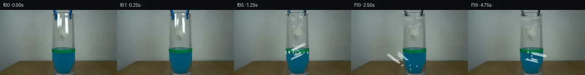

![首帧]()

Round 00
2026-11-06T04:49:10.137153+00:00像素候选变化代码 +303/−0inspection 更新
pixels 9c0093aac6851bc2 · code a9818f0e91dae7a3
查看本轮 generate.py 真实 diff
--- previous/generate.py
+++ current/generate.py
@@ -0,0 +1,303 @@
+"""PixelWorld-Text animation: Grabber releases paper into blue liquid.
+Generates 20 frames at 256x144, 4fps. Frame 00 exactly equals first_frame.png.
+"""
+from pathlib import Path
+import numpy as np
+from PIL import Image
+import math
+from artifact_io import save
+
+CASE_DIR = Path(__file__).parent
+OUT = CASE_DIR / ".tmp"
+OUT.mkdir(exist_ok=True)
+
+# ── Load first frame ──────────────────────────────────────────────────
+first = np.array(Image.open(CASE_DIR / "first_frame.png"), dtype=np.float64)
+H, W = 144, 256
+
+# ── Identify scene regions ───────────────────────────────────────────
+lum = 0.299 * first[:,:,0] + 0.587 * first[:,:,1] + 0.114 * first[:,:,2]
+
+# Paper region: bright white area between grabber prongs
+paper_bright = lum > 200
+paper_ys, paper_xs = np.where(paper_bright)
+paper_ymin, paper_ymax = paper_ys.min(), paper_ys.max()
+paper_xmin, paper_xmax = paper_xs.min(), paper_xs.max()
+print(f"Paper bounding box: y=[{paper_ymin},{paper_ymax}], x=[{paper_xmin},{paper_xmax}]")
+
+# Broader paper+glow region for removal (includes halo)
+paper_glow = lum > 170
+glow_ys, glow_xs = np.where(paper_glow)
+glow_ymin, glow_ymax = glow_ys.min(), glow_ys.max()
+glow_xmin, glow_xmax = glow_xs.min(), glow_xs.max()
+
+# Grabber prong regions (blue-black at top)
+# Left prong: blue pixels around x=116-124, y=0-14
+grab_left = np.zeros((H,W), dtype=bool)
+for y in range(0, 15):
+ for x in range(112, 130):
+ b, g, r = first[y,x,2], first[y,x,1], first[y,x,0]
+ if (b - r > 40 and b - g > 20) or (r+g+b < 70):
+ grab_left[y,x] = True
+# Right prong: blue-black around x=148-158, y=0-14
+grab_right = np.zeros((H,W), dtype=bool)
+for y in range(0, 15):
+ for x in range(144, 162):
+ b, g, r = first[y,x,2], first[y,x,1], first[y,x,0]
+ if (b - r > 40 and b - g > 20) or (r+g+b < 50):
+ grab_right[y,x] = True
+
+# Grabber shaft/trace extending downward from prongs
+# Left shaft: x=116-124, y=14-36
+grab_left_shaft = np.zeros((H,W), dtype=bool)
+for y in range(14, 38):
+ for x in range(114, 128):
+ r, g, b = first[y,x,0], first[y,x,1], first[y,x,2]
+ # Look for darker-than-background pixels along the shaft
+ bg_r = 135.0
+ if r < bg_r - 5:
+ grab_left_shaft[y,x] = True
+
+# Right shaft: x=148-156, y=14-36
+grab_right_shaft = np.zeros((H,W), dtype=bool)
+for y in range(14, 38):
+ for x in range(144, 160):
+ r, g, b = first[y,x,0], first[y,x,1], first[y,x,2]
+ if r < 130:
+ grab_right_shaft[y,x] = True
+
+# Combined grabber mask (everything that needs to be removed when grabber retracts)
+grabber_mask = grab_left | grab_right | grab_left_shaft | grab_right_shaft | paper_glow
+
+# ── Background fill for removed regions ──────────────────────────────
+# Create a clean background by sampling nearby pixels outside the removable region
+def build_background(ref_frame):
+ bg = ref_frame.copy()
+ # Fill the removable region with interpolated background
+ mask = grabber_mask
+ for y in range(H):
+ for x in range(W):
+ if mask[y, x]:
+ # Find nearest non-mask pixel to the left and right
+ lx, rx = x, x
+ while lx >= 0 and mask[y, lx]:
+ lx -= 1
+ while rx < W and mask[y, rx]:
+ rx += 1
+ if lx >= 0 and rx < W:
… diff truncated; 216 more lines …